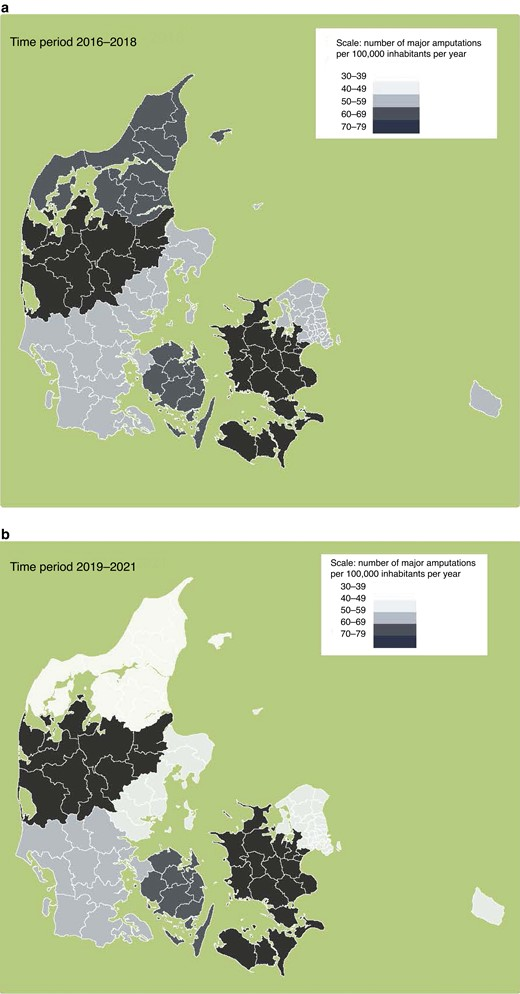

- Funding
- conflict of interest
- Refernces
- Next>
JOURNAL ARTICLE
Variation in lower limb amputation rates: a national scandal FREE
Kim Christian Houlind
,
Jakob Kjellberg
British Journal of Surgery, Volume 110, Issue 3, March 2023, Pages 291–293, https://doi.org/10.1093/bjs/znac417
Published: 12 January 2023
Published: 12 January 2023
Published: 12 January 2023
Published: 12 January 2023
PDF
Split view
Cite
Permission
Share
Subject: Vascular Surgery
Issue Section: Leading article
Chronic limb-threatening ischaemia (CLTI), diabetes and major lower limb amputations have been in the headlines in Denmark. Vascular surgery has been a focus of attention since an exposé on Danish national television on 11 May 2022 about variations in patient care. Almost every week there have been headlines about patients who underwent unnecessary leg amputations, or patients who narrowly avoided losing their leg after seeking a second opinion. From existing in relative obscurity, vascular surgery has been thrust into the spotlight of Danish public attention.
Fig. 1
Difference in rates of major amputations across regions in Denmark
a 2016–2018. b 2019–2021. Based on data from rkkp2.
What sparked the interest was an analysis of the status of vascular surgery in the Central Region of Denmark, one of the five political-administrative units governing the tax-funded healthcare system in the country1. The report was commissioned by the administrative leadership of the region. In the report, a comparison was performed between the Central Region of Denmark, with a population of 1,321,053 inhabitants (in 2019), and the rest of the peninsula of Jutland, with a population of 1,349,771 inhabitants. The number of infrainguinal revascularization procedures (angioplasty or bypass surgery) performed for amputation prevention in patients with CLTI performed in the Central Region during the period 2007–2020 was 3151 versus 7069 procedures in the rest of Jutland. This number was stable over the entire 14-year period. The number of major amputations performed in the Central Region over the period 2016–2020 was reported to be 2013, while in the rest of Jutland it was reported to be 1554, an annual difference of 92 amputations per year. Later, the Central Region corrected the number they had provided for the analysis, changing the number to an average difference of 47 amputations per year.
This difference in amputation rates was publicly deemed to be unacceptable by the political level of the Central Region, by the Danish Minister of Health, and by politicians from almost all political parties, all of whom demanded action. One of the consequences was the firing of the highest-ranking civil servant in the Central Region. A broader analysis, including all of Denmark, has subsequently been performed2, and hundreds of patients who have had a limb amputated have received letters that they may be eligible for financial compensation if their limb could have been saved with more timely and appropriate vascular intervention.
In the national report it was found that, between 2016 and 2021, three regions had increased their vascular surgical activity and had seen a significant drop in amputation rates2 (Fig. 1). However, one of these regions saw a much larger reduction in the number of amputations than the two others. In this region (the Northern Region), the increase in the number of procedures had been combined with a strengthening of orthopaedic services. This included a regional single-entrance fast-track referral service of patients for wound care, centred around a newly formed unit of orthopaedic surgeons who were able to book their own operating theatres and have regular multidisciplinary team meetings with endocrinologists, vascular surgery specialists, and interventional radiologists. These observations highlight the need for timely revascularization throughout the week, and was also recently illustrated in a similar study in the UK that documented differences in waiting time for revascularization, depending on the day of admittance to hospital3.
In the national report it was found that, between 2016 and 2021, three regions had increased their vascular surgical activity and had seen a significant drop in amputation rates2 (Fig. 1). However, one of these regions saw a much larger reduction in the number of amputations similar study in the UK that documented differences in waiting time for revascularization, depending on the day of admittance to hospital3.
In the national report it was found that, between 2016 and 2021, three regions had increased their vascular surgical activity and had seen a significant drop in amputation rates2 (Fig. 1). However, one of these regions saw a much larger reduction in the number of amputations similar study in the UK that documented differences in waiting time for revascularization, depending on the day of admittance to hospital3.
In the national report it was found that, between 2016 and 2021, three regions had increased their vascular surgical activity and had seen a significant drop in amputation rates2 (Fig. 1). However, one of these regions saw a much larger reduction in the number of amputations similar study in the UK that documented differences in waiting time for revascularization, depending on the day of admittance to hospital3.
In the national report it was found that, between 2016 and 2021, three regions had increased their vascular surgical activity and had seen a significant drop in amputation rates2 (Fig. 1). However, one of these regions saw a much larger reduction in the number of amputations similar study in the UK that documented differences in waiting time for revascularization, depending on the day of admittance to hospital3.
In the national report it was found that, between 2016 and 2021, three regions had increased their vascular surgical activity and had seen a significant drop in amputation rates2 (Fig. 1). However, one of these regions saw a much larger reduction in the number of amputations similar study in the UK that documented differences in waiting time for r example, in uncomplicated varicose vein surgery and cancer surgery in the UK10,11. In some parts of a country, more people have better access to part height: 100vh; overflow: scroll;ntry. In some cases, there are good reasons for variation, but in other cases the reasons for variation can be more difficult to establish. A strong commitment to providing high-quality health services to the whole country is necessary to address unwarranted variation. However, it is equally important to underst revascularization, depending on the day of admittance to hospital3.
Funding
The authors have no funding to declare.
Conflict of interest
The authors declare no conflict of interest.
References
- oulind KC. Analyse af Karkirurgien I Region Midtjylland Foretaget for Region Midtjylland. 2022. https://www.rm.dk/api/NewESDHBlock/DownloadFile?agendaPath=%5C%5CRMAPPS0221.onerm.dk%5CCMS01-EXT%5CESDH%20Data%5CRM_Internet%5Cdagsordener%5Chospitalsudvalget%202022%5C09-05-2022%5CAaben_tillaegsdagsorden&appendixId=342120
- oulind KC. Analyse af Karkirurgien I Region Midtjylland Foretaget for Region Midtjylland. 2022. https://www.rkkp.dk/siteassets/om-rkkp/nyheder/ny-vicedirektor/rkkp-amputationer-rapport-2022-003.pdf
- Birmpili P, Johal A, Li Q, Waton S, Chetter I, Boyle JR et al. Factors associated with delays in revascularization in patients with chronic limb-threatening ischaemia: population-based cohort study. Br J Surg 2021;108:951–959
- Hinchliffe RJ, Forsythe R, Apelquist J, Boyko EJ, Fitridge R, Hong JP et al. Guidelines on the diagnosis, prognosis, and management of peripheral artery disease in patients with foot ulcers and diabetes (IWGDF 2019 update). Diabetes Metab Res Rev 2020;36:e3276
- Londero LS, Hoegh A, Houlind K, Lindholt JS. Major amputation rates in patients with peripheral arterial disease aged 50 and over in Denmark during the period 1997–2014 and their relationship with demographics, risk factors, and vascular services. Eur J Vasc Endovasc Surg 2019;58:729–73
- Holman N, Young RJ, Jeffcoate WJ. Variation in the recorded incidence of amputation of the lower limb in England. Diabetologia 2012;55:1919–1925
- Goodney PP, Travis LL, Brooke BS, DeMartino RR, Goodman DC, Fisher ES et al. Relationship between regional spending and amputation rate. JAMA Surg 2014;149:34–42
- Behrendt C-A, Sigvant B, Szeberin Z, Beiles B, Eldrup N, Thomson IA et al. International variations in amputation practice: a VASCUNET report. Eur J Vasc Endovasc Surg 2018;56:391–399
- Behrendt C-A, Sigvant B, Szeberin Z, Beiles B, Eldrup N, Thomson IA et al. International variations in amputation practice: a VASCUNET report. Eur J Vasc Endovasc Surg 2018;56:391–399
- Behrendt C-A, Sigvant B, Szeberin Z, Beiles B, Eldrup N, Thomson IA et al. International variations in amputation practice: a VASCUNET report. Eur J Vasc Endovasc Surg 2018;56:391–399
- Behrendt C-A, Sigvant B, Szeberin Z, Beiles B, Eldrup N, Thomson IA et al. International variations in amputation practice: a VASCUNET report. Eur J Vasc Endovasc Surg 2018;56:391–399
- ©The Author(s) 2023. Published by Oxford University Press on behalf of BJS Society Ltd. All rights reserved. For permissions, please e-mail: journals.permissions@oup.com
- This article is published and distributed under the terms of the Oxford University Press, Standard Journals Publication Model https://www.rkkp.dk/siteassets/om-rkkp/nyheder/ny-vicedirektor/rkkp-amputationer-rapport-2022-003.pdf